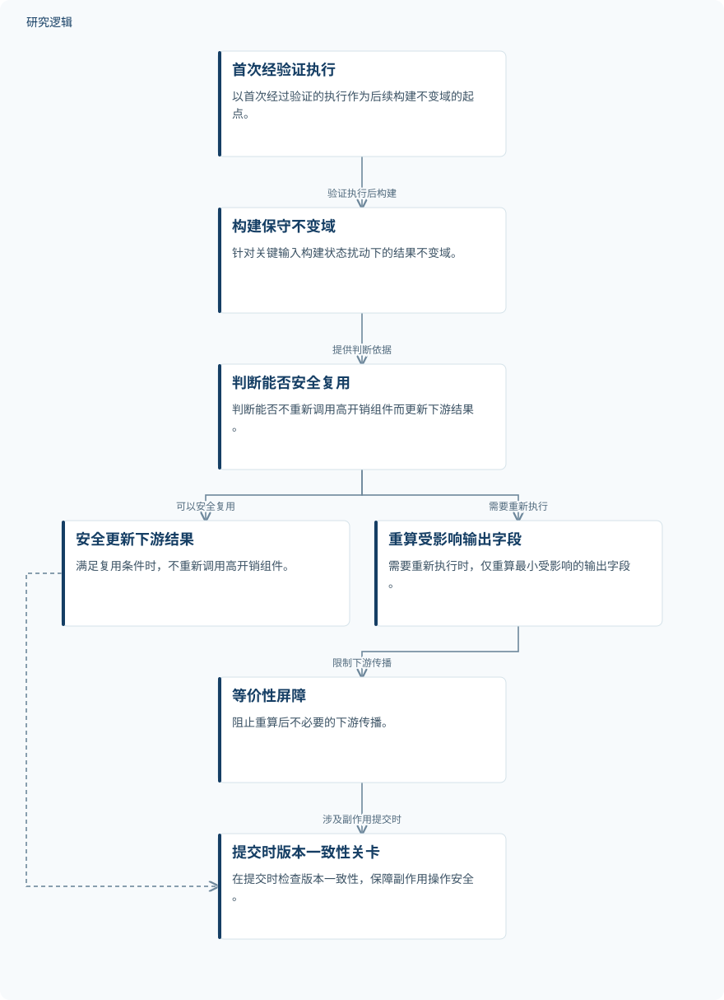

摘要解读
面向自主智能系统的增量一致性执行
Incremental Consistency Execution for Autonomous Intelligent Systems
解读更新 2026-11-10 16:01 · 依据公开摘要整理，未核验全文细节
自主智能系统执行长流程时，外部状态变化是否一定意味着整条流程重跑？这项研究关注如何安全复用已有结果，在减少大模型等高开销组件调用的同时，保持执行结果的一致性。
文章目录
外部状态不断变化，整条流程重跑代价高
长时程自主智能系统通常需要协同调用大语言模型、数据库、外部 API 和规则引擎。执行期间，外部状态仍在持续变化；如果每次变化都触发整个工作流重新执行，就会产生大量冗余计算。
因此，研究问题不只是怎样减少调用，还包括怎样判断已有结果仍然适用，以及何时必须重新计算。这也是理解本文“一致性执行”的关键：节省计算需要与安全复用的条件一起讨论。
先判断结果能否复用，再限制重算与传播
作者提出的增量一致性执行方法，以任务事实契约、字段级依赖掩码和状态扰动下的结果不变域为基础。在首次经过验证的执行之后，系统为关键输入构建保守的不变域，据此判断能否在不重新调用高开销组件的情况下，安全更新下游结果。
如果确实需要重新执行，方法只重算最小受影响的输出字段，并通过等价性屏障阻止不必要的变化继续向下游传播。此外，系统在提交时设置版本一致性关卡，用于保障会改变外部状态的副作用操作安全。
依据摘要整理的增量一致性执行示意


概括首次验证、复用判断、必要重算与提交检查的关系；这是摘要示意，不是论文原图，也不表示完整实现细节。
下载 SVG图示关系说明
实线表示相邻阶段的信息流，虚线表示跨阶段联系或反馈。
首次经验证执行 → 构建保守不变域：验证执行后构建；构建保守不变域 → 判断能否安全复用：提供判断依据；判断能否安全复用 → 安全更新下游结果：可以安全复用；判断能否安全复用 → 重算受影响输出字段：需要重新执行；重算受影响输出字段 → 等价性屏障：限制下游传播；安全更新下游结果 → 提交时版本一致性关卡：涉及副作用提交时；等价性屏障 → 提交时版本一致性关卡：涉及副作用提交时
摘要报告调用与延迟下降，同时保持一致性
摘要报告，作者在工业故障诊断、企业分析和基于大语言模型的多工具助手场景中开展了实验。结果显示，该方法显著减少了高开销组件调用和端到端延迟，同时保持较高的一致性与较低的错误复用率。
这些结果同时涉及效率与复用正确性，而不只是运行速度。不过，摘要没有给出具体数值，因此目前只能保留其定性结论，不能据此比较不同场景中的收益大小。
收益幅度与安全边界仍需更多实验信息
仅凭本次完整摘要，无法判断实验样本规模、数据构成、比较基线、重复验证范围，以及一致性和错误复用率的具体定义。摘要也未展开不变域的构建方式、验证成本与适用条件；这些属于当前资料未报告的信息，不代表论文没有开展相关工作。
阅读启发：关注故障诊断中的复用判据
阅读启发：面向智能运维，可以重点追问工业故障诊断场景中，哪些输入变化允许保留已有结果，哪些变化必须触发字段级重算。进一步阅读时，也值得关注保守不变域和提交时版本检查如何界定安全复用范围，而不宜把摘要中的效率结论直接推广到所有运维任务。
以上为本站阅读启发与建议，不是论文已验证的结论。